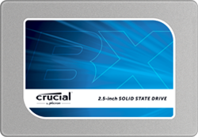

启动几乎瞬时完成。载入程序只需几秒钟。轻松加速要求苛刻的应用程序。一切皆从抛弃您的硬盘开始。
存储革命始于 2008 年我们推出第一款 SSD 的时候，现在又因为新的 CrucialÂ? BX100 的出现而继续着。专为胜过硬盘并提供符合成本效益的性能而设计，Crucial BX100 充分利用先进的闪存技术，让您的计算机远离过时的旋转磁盘的存储限制。通过以数字方式传输数据，而不是不得不在旋转的碟片上寻找数据，Crucial BX100 几乎让计算机上的一切都更快更有效率。
速度比普通硬盘快 15 倍1
在更少的时间内完成更多事情 — 或者享受更多乐趣。Crucial BX100 SSD 比普通硬盘快 15 倍，并且对可压缩数据和不可压缩数据提供真正的 535 MB/s 顺序读取速度。通过同等处理所有数据，Crucial BX100 让您能够迅速地进行一切操作，无论您是在保存图像、访问 ZIP 文件还是加载视频。
可靠性比普通硬盘高 2 倍2
通过在 Crucial BX100 上存储您的数据来对其进行保护，可靠性比普通硬盘显著提升。在计算机行业中，存储设备的可靠性是以平均故障间隔时间 (MTBF) 来衡量的。大多数硬盘的 MTBF 等级为 60 万小时，而 Crucial BX100 的可靠性等级为 150 万小时。实际而言，您的硬盘越可靠，它崩溃的可能性就越小。
能效比普通硬盘提升几达 2 倍3
系统的寿命比以前更长，且能更加高负载的工作，但是使用的电量更少。通过 Extreme Energy Efficiency 技术，Crucial BX100 的能效比普通硬盘提高了多达 90%。因为 SSD 以数字方式存取数据，而不是在旋转碟片上寻找数据，其消耗的电量显著减少。
价值比普通 SSD 更高
充分利用您的系统 — 无需牺牲质量。速度高达 535 MB/s，Crucial BX100 SSD 不是市场中最快的驱动器，但我们的本意就是如此。我们努力设计 Crucial BX100 以实现巨大的性能提升，同时在众多 SSD 提供无与伦比的价值。转换到 Crucial BX100，从 Crucial SSD 获得您期待的一切，价值无法预期。
Crucial BX100 SSD 技术规格
产品宣传册 2.5" (7mm) SSD |
2.5" (7mm) SSD | 2.5" (7mm) SSD | 2.5" (7mm) SSD | |
|---|---|---|---|---|
| 容量4 | 120GB | 250GB | 500GB | 1TB |
| 部件号 | CT120BX100SSD1 | CT250BX100SSD1 | CT500BX100SSD1 | CT1000BX100SSD1 |
| 箱内物品 | 2.5" (7 mm) SSD 7 mm - 9.5 mm 定位架 | 2.5" (7 mm) SSD 7 mm - 9.5 mm 定位架 | 2.5" (7 mm) SSD 7 mm - 9.5 mm 定位架 | 2.5" (7 mm) SSD 7 mm - 9.5 mm 定位架 |
| 顺序读取 MB/s5 | 535 | 535 | 535 | 535 |
| 顺序写入 MB/s5 | 185 | 370 | 450 | 450 |
| 随机读取 IOPS5 | 87k | 87k | 90k | 90k |
| 随机写入 IOPS5 | 43k | 70k | 70k | 70k |
Micron® 品质 - 更高的可靠性。
作为世界上最大的闪存制造商之一 Micron 旗下的品牌，Crucial BX100 以曾制造出全球最先进闪存和存储技术的品质和创新为依托。Crucial BX100 已经过超过一千小时的发布前验证测试和数百次固态硬盘质量鉴定测试，经证实质量非常可靠。您将注意到差别。
注意：1GB = 10 亿字节。实际可用容量可能有所不同。
- 性能级别基于 Crucial BX100 SSD 与 Western Digital? Caviar Blue? WD10EZEX 内置硬盘的同类评级。根据所使用的性能指标评测和单独系统的配置，实际性能级别可能有所不同。测试设置：1TB Crucial BX100 SSD 和 1TB Western Digital Caviar Blue 内置硬盘，均采用 Intel? DZ87RL 主板、Intel i7-4770K 3.50GHz 处理器、BIOS Rev. 0327 和 Windows? 8 Pro 64 位操作系统，使用 PCMark Vantage HDD 测试套件进行测试。2014 年 12 月执行基准测试。
- 可靠性比较基于已公布的 1TB Crucial BX100 SSD 和 1TB Western Digital Caviar Blue 的 MTBF 等级（分别为 150 万小时和 60 万小时）。
- 硬盘平均用电量基于已公布的 1TB Western Digital Blue 内置硬盘规格。
- 部分存储空间用于格式化和其他目的，不可用于存储数据。1GB 等于 10 亿字节。实际可用容量可能有所不同。
- 典型的 I/O 性能值使用 IOMeter® 测量，在队列深度为 32 且启用写入缓存的情况下测得。假设为刚开箱 (FOB) 状态。为了测量性能，可以使用安全擦除命令将固态硬盘恢复到 FOB 状态。系统变化会影响测量结果。